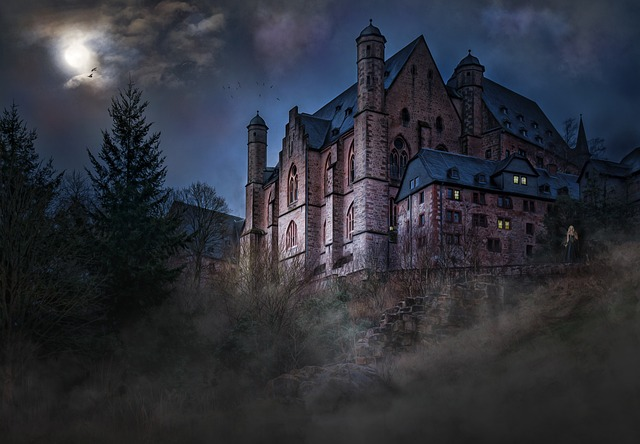

Aqui você escolhe como quer se aventurar
árvores falantes,flores que ajudam e a plataforma flutuante
grutas bilhantes com cristais que iluminanam o camilho e plataformas móveis

uma fortaleza sombria cheio de desafios e inimigos poderosos
você escolheu itens colecionáveis que aumentam as habilidades dos personagem e desbloqueia os novos poderes
você escolheu fetitiços temporários que permitem ao personagem se tornar invisivél e invulneráve
resolva quebra cabeças e complete missões para avnçar no jogo
lutas com chefe em cada nivél para ganhar novos poderes e desbloquear áreas